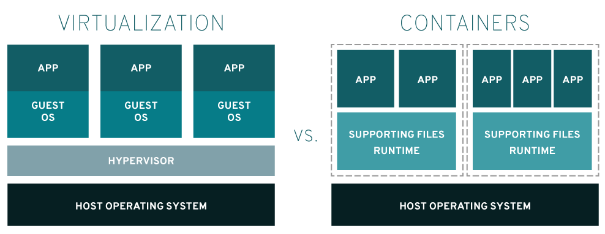

도커 주요 명령 익히기
도커는 리눅스 컨테이너부터 시작된 기술입니다.

가상화 는 하이퍼바이저를 사용하여 하드웨어를 에뮬레이션하고 이를 통해 여러 운영체제를 병렬로 실행한다.
Linux 컨테이너 는 운영체제에서 기본적으로 실행되고 모든 컨테이너 전체에서 운영체제(리눅서 커널 )을 공유하므로 애플리케이션과 서비스를 가볍게 유지할 수 있으며 빠른 속도로 동시에 실행할 수 있습니다.
LXC (LinuX Container)
리눅스 운영체제 레벨에서 영역과 자원할당 (CPU,메모리,네트워크)등을 분리하여, 마치 별도의 리눅스 시스템을 운영할 수 있는 리눅스 커널 기술을 의미합니다.
리눅스 컨테이너
제어 그룹(cgroups )은 프로세스 또는 프로세스 그룹의 리소스 사용을 제어하고 제한하는 커널 기능입니다. 또한 cgroups는 사용자 공간을 설정하고 해당 프로세스를 관리하는 초기화 시스템인 systemd를 사용하여 이처럼 격리된 프로세스를 더 효과적으로 제어합니다. 이러한 기술은 모두 Linux에 대한 전반적인 제어 기능을 추가하면서 환경을 분리된 상태로 유지할 방법을 제시하는 프레임워크가 되었습니다.
구성 요소
구성 요소와 동작 방식을 이해해야 도커 엔진이 실행이 되어야 도커 명령어가 실행이 가능하다는걸 이해할 수 있습니다.
docker Engine
도커 프로그램이 실행되면 도커 데몬 프로세스가 동작합니다. (도커 데몬은 도커 엔진의 핵심이 되는 백그라운드 프로세스입니다.)
사용자가 도커 커맨드를 입력하면 해당 명령어가 도커 데몬 프로세스에게 전달됩니다.
도커 데몬 프로세스는 컨테이너 기술을 활용하여 사용자의 명령을 실행합니다. 이는 도커 컨테이너를 생성하거나 시작하고, 중지하거나 삭제하는 등의 작업을 수행하는 것을 포함합니다.
실행 결과는 도커 데몬 프로세스에 의해 출력 스트림에 전달되어 사용자에게 반환됩니다.
도커는 서버/ 클라이언트 구조로 이루어져있습니다.
MySQL의 MySQL 엔진 / InnoDB (스토리지)와 같은 구조라고 생각하면 됩니다.
서버는 docker deamon process (데몬 프로세스) 형태로 동작합니다.
클라이언트는 docker command로 사용자가 CLI를 통해서 명령어를 입력하면 그 명령어가 서버 프로세스에게 요청을 하고 응답을 받는 구조입니다.
클라이언트(command )프로세스가 서버(deamon) 프로세스에게 명령어를 전달할 때 직접 메모리에 접근할 수 없기 때문에 프로세스간 통신 방법인 IPC 방식이 아닌 Rest API를 통해서 통신을 합니다. HTTP GET 'docker deamon process' /api-version/containers처럼 통신을 합니다.
docker image
이미지는 스크립트의 집합입니다.
우분투를 설치후 여기에 웹 서버를 설치하고, 특정 파일을 도커 컨테이너에 넣는다.
이런 스크립트를 레이어로 쌓는 형태로 여러 개의 스크립트가 최종적으로 실행이 되어서 하나의 이미지를 만든다고 생각하면 됩니다.
이미지 파일은 스크립트 집합으로 정적인 파일입니다.
이 파일을 실행해야 리눅스 컨테이너 형태든 도커형태든 동작이 되어 컨테이너 형태로 해당 프로그램이 실행될 수 있습니다.
docker container
스크립트 집합을 실행하여 하나의 컨테이너로 동작하는 것을 도커 컨테이너라고 합니다.
그러면 스크립트 집합은 하나고 그걸로 컨테이너를 여러 개를 만들 수 있습니다.
도커 이미지가 리눅스 컨테이너 형태로 실행한 상태(instance)를 의미합니다.
도커 데몬에 있는 커널에
LXC로 리눅스 컨테이너를 생성한 후, 해당 컨테이너에 docker image에 포함된 명령어를 실행하여,docker container를 만들고 실행합니다.docker container는 격리된 환경이므로,docker deamon process를 통해서 접근할 수 있고, 내부에 들어가서 코드 수정,재실행도 가능합니다.